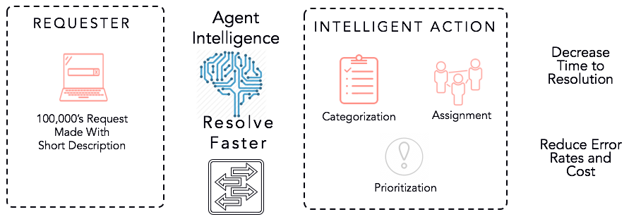

Boston ServiceNow
Developer Meetup
Nov 7, 2017
Kingston Developer Preview
Dave Slusher
@<DaveSlusherNOW>
developer.servicenow.com
Docs, Training, Free Instances

Developer Portal Learning Plans
Choose your persona and progress through curated path
- Client-side and Server-side scripting
- Security
- Business logic
- Service Portal
Developer Portal -> Learn -> Learning Plans
Agenda
Kingston Developer Features
- New Developer Features
- Flow Designer and Demo
- Q&A and Discussion
New Developer Features in Kingston
- Overview of Kingston Features
- Agent Intelligence
- Flow Designer
SQL Functions
- Provides Access to Underlying SQL Functionality
- String, Mathematical and Date Functions
- Can be used in Dictionary Entries and Scripting
SQL Functions

Agent Intelligence
- Machine Learning Algorithm to Predict Values
- Learned from Sets of Training Data
- Define Training Sets

Agent Intelligence
Define Training Sets
- Source Table
- Filter
- Input Fields
- Output Field
Service Portal
- Portal Wide Announcements
- Add SEO Information to Service Portal Pages
- Grouping of Widget Instance Options
- Data
- Presentation
- Behavior
- TinyMCE Editor Creates Links and Images
Flow Designer
- Automate common tasks
- Pre-built Actions and Triggers
- Natural language, drag and drop interface
- Familiar paradigm
- IFTTT, Tasker, Zapier
Components of a Flow
- Properties
- Triggers
- Actions
- Data
Spokes
Scoped applications that can contain
- Flow Templates
- Actions
- Action Steps
Example Spokes OOB
Platform
- ITSM
- VTB
- Customer Service
- Field Service
IntegrationHub
- HipChat
- Slack
- Microsoft Teams
Properties
- Name
- Description
- Application
- Status
Triggers
- As of Kingston, two types:
- Record-based
- Created
- Updated
- Created or Updated
- Deleted
- Schedule-based
- Daily/Weekly/Monthly
- Run Once
- Custom Interval
Actions
- 60 Provided in Kingston from various Spokes
- New Actions can be built with Action Designer
- Flows can contain multiple Actions
- Actions can have if and looping logic
- Use the "Data Pill Picker" like ATF
Pre-Built Actions provided in Spokes
Pre-Built Actions
Off-Platform Integrations provided in Spokes
- Slack
- HipChat
- Microsoft Teams
Integration Hub
- Build arbitrary integrations
- Requires subscription and SN plugin activation
Custom Actions
- Can be built with series of atomic Actions
- Input and Output are Defined
Data
- Data can be returned from steps like ATF
- Data exposed in previous steps accessible
- The "Data Pill Picker" aka "Cannon ball / Martini olive"
When to Use a Flow
- Only Available Triggers and Actions are Needed
- Non-developers Changing Flows
- Custom Actions can be Developed
There are wonderful things in here!
Let's build something impressive!
Questions?

Thank You!
@<Twitter_Handle>
email